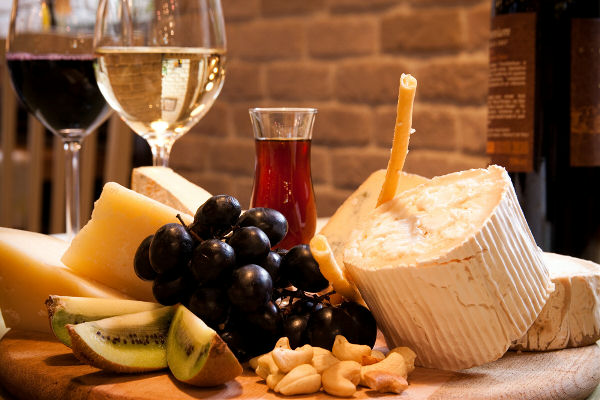

Туристическое агенство
Австрия
Франция
Греция
Кухня

Французская кухня настолько богата и разнообразна, что мы даже и не будем пытаться попробовать её описать – это нужно пробовать самому. В разных областях страны существуют свои кулинарные традиции и свои фирменные блюда. Знаменитые бургундские белые улитки, жареный каплун с каштанами, прованский суп буйабесс, луковый суп, трюфеля Перигора, получившие название «чёрных бриллиантов», гусиная печёнка – фуа–гра, французские сыры и многое другое. Франция неизменно ассоциируется у нас с вином. Именно здесь производятся всемирно известные вина, шампанское и коньяки. Традиции старины, рецепты, хранящиеся в тайне многими поколениями виноделов, красоты бескрайних виноградников и многовековые замки, придадут вашему путешествию по Франции особенный вкус. Существует общепризнанное мнение, что географию Франции можно изучать по названиям вин и коньяков. Особенно славятся виноградники Бордо и Бургундии.